ESPACES BRUTS
2025–2026 · approx. 9 hours · 24 environments · random continuous playback
Espaces bruts is an archive of reconstructed sound environments. The materials originate from abandoned recordings, unfinished sketches and discarded digital debris. Through stretching, erosion, layering and sound recycling, these remnants become inhabitable acoustic spaces.
The online player randomly selects the environments and overlaps them into a continuous stream with no fixed beginning, end or sequence. Each listening session unfolds differently.